suppressPackageStartupMessages(library(tidyverse))
#install.packages('palmerpenguins')
library(palmerpenguins)Visualization Lesson with Palmer Penguins
Introduction
Welcome to Day 2 of our data visualization journey! Today, we’ll dive deeper into the world of visualizing data using the Palmer Penguins dataset. This dataset provides insights into penguins in the Palmer Archipelago, and it’s a perfect opportunity for us to practice and hone our visualization skills.
- This session is an opportunity to:
- Independently code visualizations.
- Learn how to troubleshoot issues that arise.
- Explore data in a hands-on manner.
- We will also teach several new data visualization tricks:
- Changing shapes of points.
- Customizing figure legends.
- Using
facet_gridfor comparing many aspects of data simultaneously. - Other advanced plotting tricks.
- Approach this session with curiosity and an adventurous spirit:
- Experiment with different plot types.
- Play with colors and styles.
- Let creativity guide your visual storytelling.
- Questions are welcome:
- Learning together is key.
- Your inquiries are a vital part of the process.
- Let’s embark on this journey and enjoy the exploration of data visualization!
 The Palmer Archipelago penguins. Artwork by @allison_horst.
The Palmer Archipelago penguins. Artwork by @allison_horst.
Dataset Overview
First we load necessary packages. If the palmerpenguins package is not installed, we can install it by uncommenting “install.packages” below.
Tip – Suppress Package Startup Messages
The suppressPackageStartupMessages() function in R is used to prevent the display of startup messages when loading packages. This can make your R script output cleaner and more readable, especially when loading multiple packages.
The dataset includes measurements of penguin species: Adélie, Chinstrap, and Gentoo. The palmerpenguins pacakge automatically loads the data into an object called penguins.
First we check the data class of penguins with class(), and take a look at the first few rows using the head() command.
#what class is our data
class(penguins)[1] "tbl_df" "tbl" "data.frame"head(penguins)# A tibble: 6 × 8
species island bill_length_mm bill_depth_mm flipper_length_mm body_mass_g
<fct> <fct> <dbl> <dbl> <int> <int>
1 Adelie Torgersen 39.1 18.7 181 3750
2 Adelie Torgersen 39.5 17.4 186 3800
3 Adelie Torgersen 40.3 18 195 3250
4 Adelie Torgersen NA NA NA NA
5 Adelie Torgersen 36.7 19.3 193 3450
6 Adelie Torgersen 39.3 20.6 190 3650
sex year
<fct> <int>
1 male 2007
2 female 2007
3 female 2007
4 <NA> 2007
5 female 2007
6 male 2007As we can see, the dataset, which is a tibble/dataframe, contains many numerical (lengths, dephths, and masses), and categorical (species, island, and sex) variables. It also contains a variable that could be categorical or numerical (year).
Exploratory Questions
In this section, we will take some time to ask questions about the Palmer Penguins dataset. Asking questions is a fundamental part of data analysis, as it guides our exploration and helps us uncover interesting patterns and insights.
As you look at the dataset, consider the different types of questions you might ask. What different kinds of questions can we ask using different data types, and what kind of plots might we use to answer them?
Some example questions
If you are having trouble of thinking of questions on your own, here are some example questions related to different combinations of numerical or categorical variables:
Questions leading to numerical by numerical plots
How does flipper length vary with body mass among different penguin species? This question explores correlations and possible factors influencing these traits.
Is there a relationship between the bill depth and flipper length, and does this relationship vary by species? This encourages explores multiple numerical variables and consider biological implications. Since we are comparing species, additional visualization tools like coloring points by species could aid or visualization.
Questions leading to categorical by numerical plot
How does the average body mass differ across penguin species? This question will lead to examining differences between groups.
Does the distribution of flipper lengths differ by the island on which the penguins were observed? This question could be answered by a visauization of several separate distributions, which could overlap with each other.
Questions related to one numerical variable
What is the distribution of bill lengths in the Palmer Penguins dataset, and what might this tell us about their feeding habits?
How are body mass values distributed within each species, and what does this suggest about the health or environment of these populations?
Questions related to multiple categorical variables
How do the relationships between body mass and flipper length change over different years of data collection?
Can we observe any noticeable trends in bill dimensions on different islands, and how do these trends compare across species?
These questions require the comparision of multiple categories of variables, and could be usefully displayed as separate plots side-by-side. We will use the tool facet_grid at the end of this lesson to approach such questions.
Making plots!
Warm up: numerical by numerical plots
To compare two numerical variables, a scatterplot is often the simplest and most effective plotting method. Here, we will compare the flipper length and body mass of our penguins. Remember, the inputs to a scatterplot are the columns of our tibble, which should be numeric, integer, or double vectors. Lets take a look at our data with head() and confirm the datatype with class().
head(penguins$flipper_length_mm)[1] 181 186 195 NA 193 190class(penguins$flipper_length_mm)[1] "integer"First we create a simple scatterplot with x and y labels in base r.
#simple base r plot with x and y axis labeled
plot(penguins$flipper_length_mm, penguins$body_mass_g,
xlab = "Flipper Length (mm)", ylab = "Body Mass (g)")Now we recreate the same plot using ggplot2.
# same plot in tidyverse
ggplot(penguins, aes(x = flipper_length_mm, y = body_mass_g,)) +
geom_point() +
labs(x = "Flipper Length (cm)", y = "Body Mass (kg)",
title = "Body Mass vs. Flipper Length")Warning: Removed 2 rows containing missing values or values outside the scale range
(`geom_point()`).
Can we compare different species in these plots? Let’s color our points based on the species.
# color dots by species
plot(penguins$flipper_length_mm, penguins$body_mass_g,
xlab = "Flipper Length (mm)", ylab = "Body Mass (g)",
col = penguins$species) 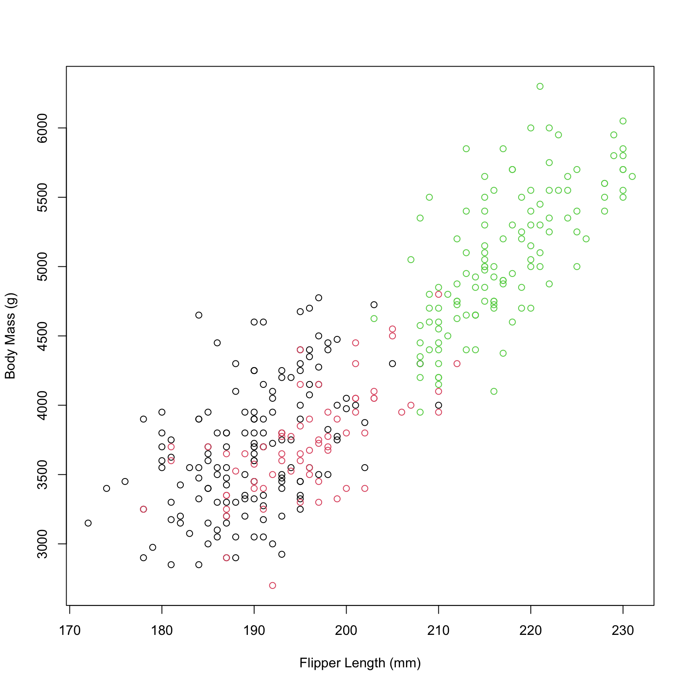
ggplot(penguins, aes(x = flipper_length_mm, y = body_mass_g, color = species)) +
geom_point() +
labs(x = "Flipper Length (cm)", y = "Body Mass (kg)",
title = "Body Mass vs. Flipper Length",
color = "Species")Warning: Removed 2 rows containing missing values or values outside the scale range
(`geom_point()`).
Why are colors specified differently in base R and ggplot?
In base R plotting, the color for each point is specified directly within the plot() function using the col argument. This argument can take a vector of colors, which will be applied to the points in the plot. In this example, we are passing the species information directly to the col argument to color the points based on the species.
In ggplot2, the aesthetics (aes) of the plot are defined within the aes() function. The color aesthetic is specified inside the aes() function to map the species variable to the colors of the points. This approach follows the grammar of graphics philosophy, where data properties are mapped to visual properties in a structured way.
Both methods allow us to compare different species in the plots by coloring the points based on the species. However, the ggplot2 approach is generally more flexible and powerful for creating complex visualizations.
Another way to change the colors in a ggplot–local aesthetics
In ggplot2, the aes() function is used to map data variables to visual properties (aesthetics) of the plot. The placement of the color specification can vary based on whether it is applied globally or locally.
Global aesthetics apply to all geoms in the plot, and are added in the initial ggplot() call (or in a stand-alone aes() layer).
Local aesthetics apply only to the geom to which they are added.
This first plot produces the same output as our orignal plot.
ggplot(penguins, aes(x = flipper_length_mm, y = body_mass_g)) +
geom_point(aes(color = species)) +
labs(x = "Flipper Length (cm)", y = "Body Mass (kg)",
title = "Body Mass vs. Flipper Length",
color = "Species")Warning: Removed 2 rows containing missing values or values outside the scale range
(`geom_point()`).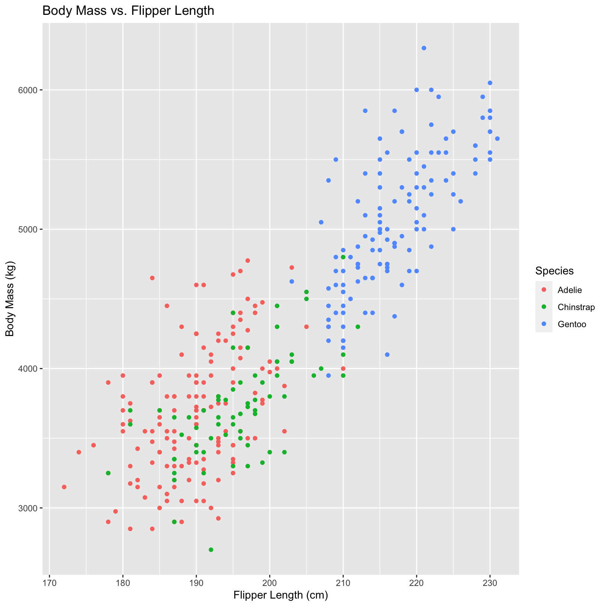
In this second plot, the local aesthetic overrides the global one.
ggplot(penguins, aes(x = flipper_length_mm, y = body_mass_g, color = species)) +
geom_point(aes(color = flipper_length_mm)) +
labs(x = "Flipper Length (cm)", y = "Body Mass (kg)",
title = "Body Mass vs. Flipper Length",
color = "Species")Warning: Removed 2 rows containing missing values or values outside the scale range
(`geom_point()`).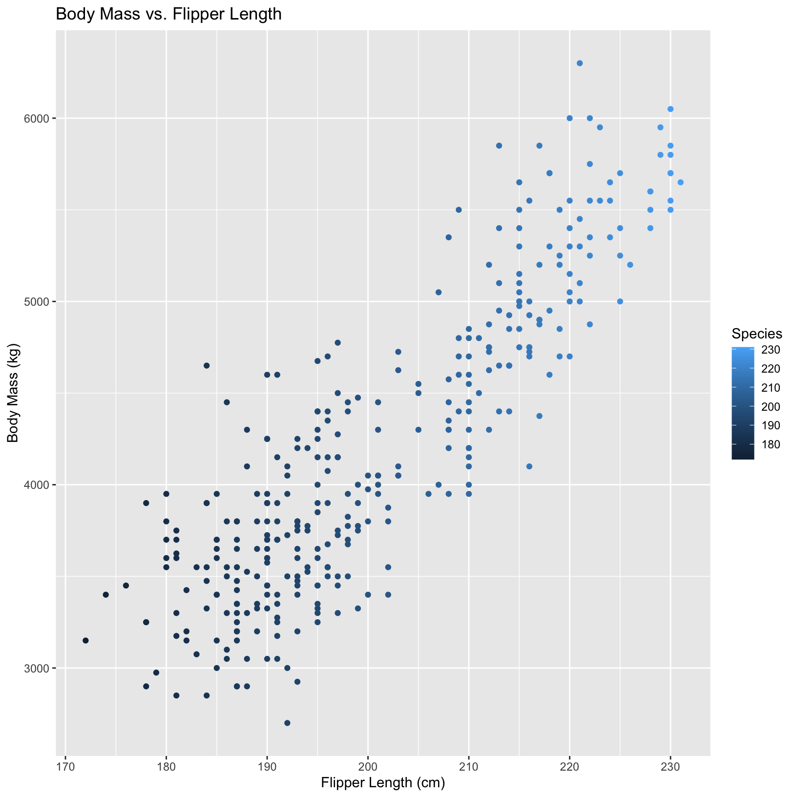
Challenge plot: Let’s customize these plots some more! Here we show you could change the shapes of the points for each species, add a customized legend in the position of the plot we want, and change the size of the points.
Take 5-10 minutes to try to figure out one or more of the changes we made to the plot: - Change the shape of the points based on species. - Change the position of the legend. - Add custom colors for the species. - Add a subtitle to the figure.
Feel free to try ggplot or base R, depending on your preference. Practice finding this information using:
Use google to find informative articles online like this
Ask a friend or instructor for help if you get stuck.
Feel free to add your own touches to the figure, and experiment with changing the numbers and variables in the figure!
Warning: A numeric `legend.position` argument in `theme()` was deprecated in ggplot2
3.5.0.
ℹ Please use the `legend.position.inside` argument of `theme()` instead.Warning: Removed 2 rows containing missing values or values outside the scale range
(`geom_point()`).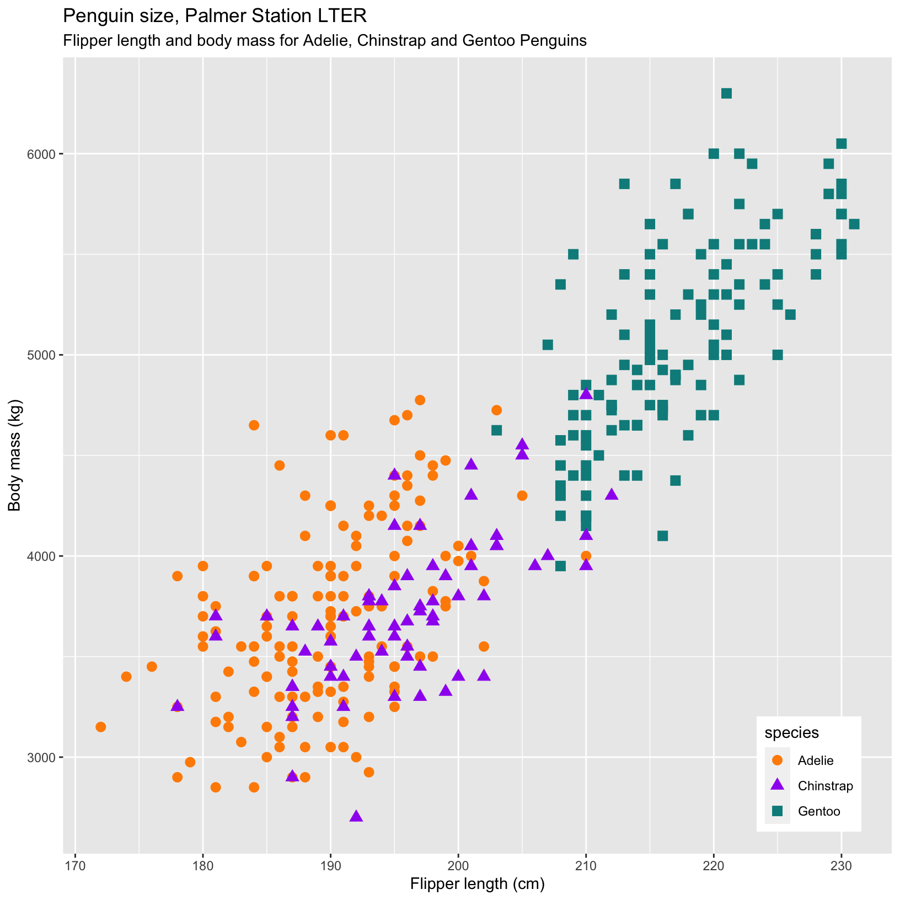
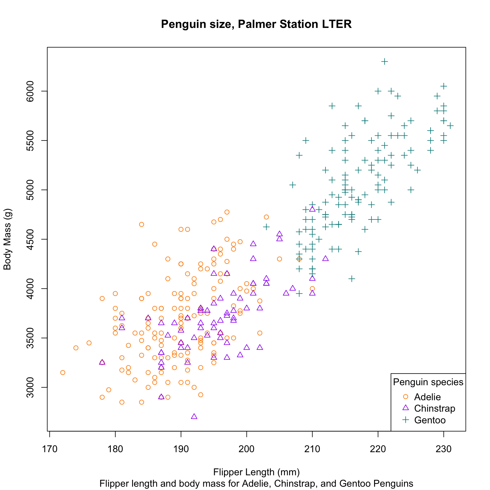
Code used to make the plot–try on your own first!
# Even more complex example with custom labels, colors, and fig legend position
ggplot(data = penguins, aes(x = flipper_length_mm, y = body_mass_g)) +
geom_point(aes(color = species, shape = species), size = 3) +
scale_color_manual(values = c("darkorange","purple","cyan4")) +
labs(title = "Penguin size, Palmer Station LTER",
subtitle = "Flipper length and body mass for Adelie, Chinstrap and Gentoo Penguins",
x = "Flipper length (cm)",
y = "Body mass (kg)") +
theme(legend.position = c(0.9, 0.1))
#Similar figure using base R
species_colors <- c("darkorange", "purple", "cyan4")
plot(penguins$flipper_length_mm, penguins$body_mass_g,
xlab = "Flipper Length (mm)", ylab = "Body Mass (g)",
main = "Penguin size, Palmer Station LTER",
sub = "Flipper length and body mass for Adelie, Chinstrap, and Gentoo Penguins",
pch = as.numeric(penguins$species), # Assign shapes based on species
col = species_colors[penguins$species]) # Assign colors based on species
# Add legend
legend("bottomright", legend = levels(penguins$species),
col = species_colors,
pch = 1:3, #shape codes to legend
title = "Penguin species")Time to practice! Independent plot making.
In this section, you’ll have the chance to make more plots on your own. We’ll display different plots with several new features to try, and you can use your plotting and researching skills to recreate them. This is a great opportunity to experiment, be creative, and see what you can come up with! Remember, questions are always welcome.
Numerical by categorical plots
Try making some numerical by categorical plots on your own using this dataset! This example looks at body mass in each species, using jittered points. See if you can recreate this on your own!
Hint – a reminder of the basic syntax for boxplots
# Base R boxplot of body mass values in each species
boxplot(body_mass_g ~ species, data = penguins,
col = c("darkorange", "purple", "cyan4"),
main = "Body Mass by Penguin Species",
xlab = "Species",
ylab = "Body Mass (g)")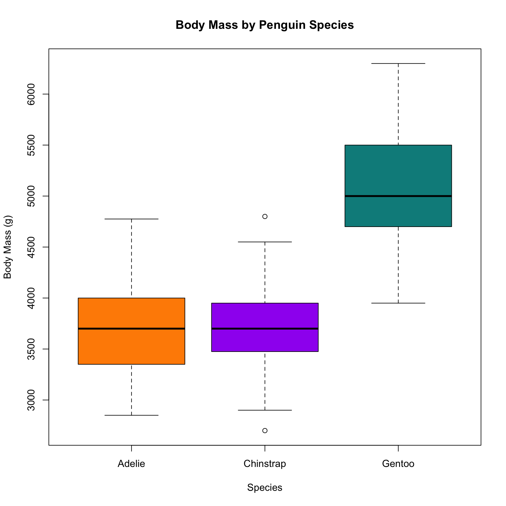
ggplot(data = penguins, aes(x = species, y = body_mass_g)) +
geom_boxplot(aes(color = species), width = 0.3) +
labs(x = "Species",
y = "Body mass (g)")Warning: Removed 2 rows containing non-finite outside the scale range
(`stat_boxplot()`).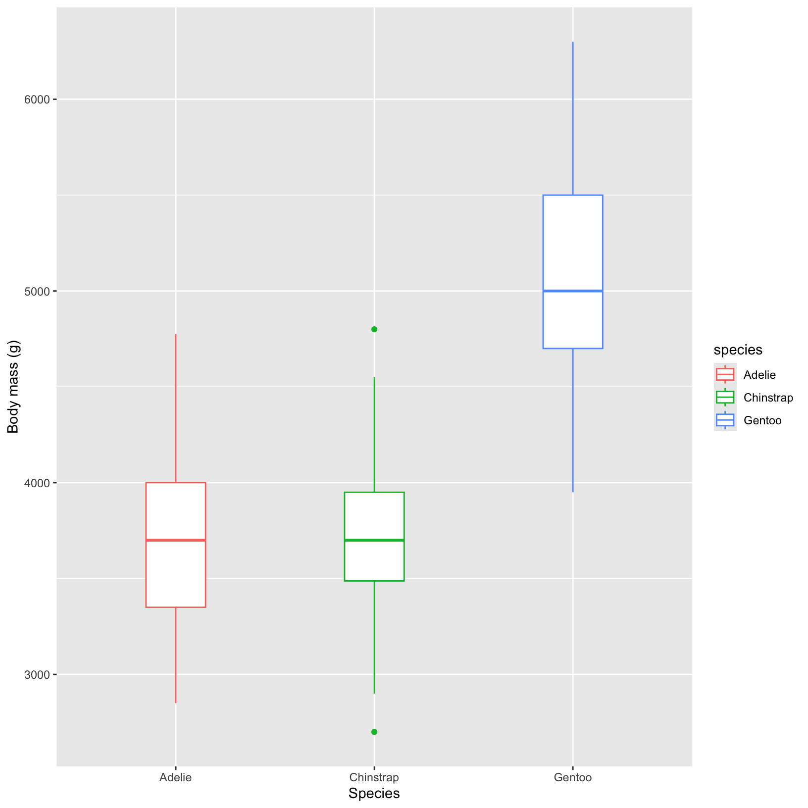
Warning: Removed 2 rows containing non-finite outside the scale range
(`stat_boxplot()`).Warning: Removed 2 rows containing missing values or values outside the scale range
(`geom_point()`).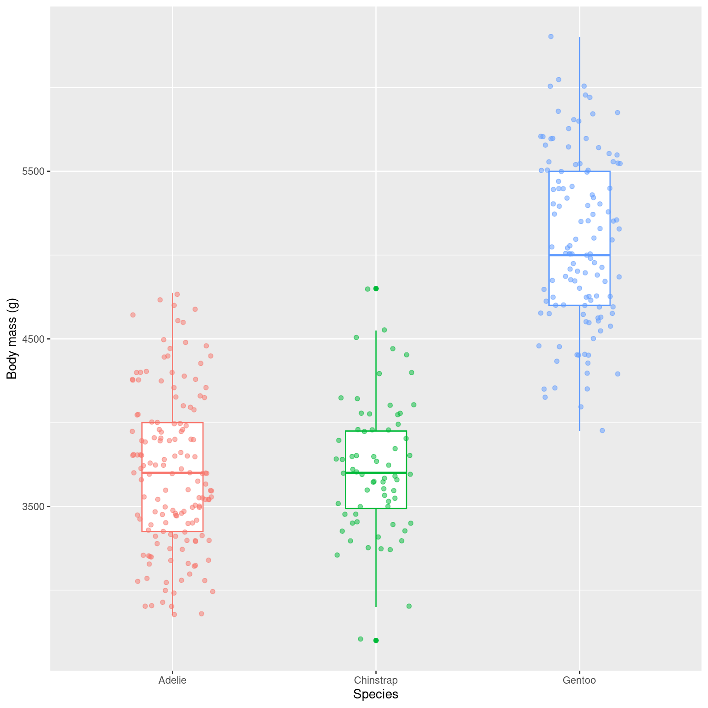
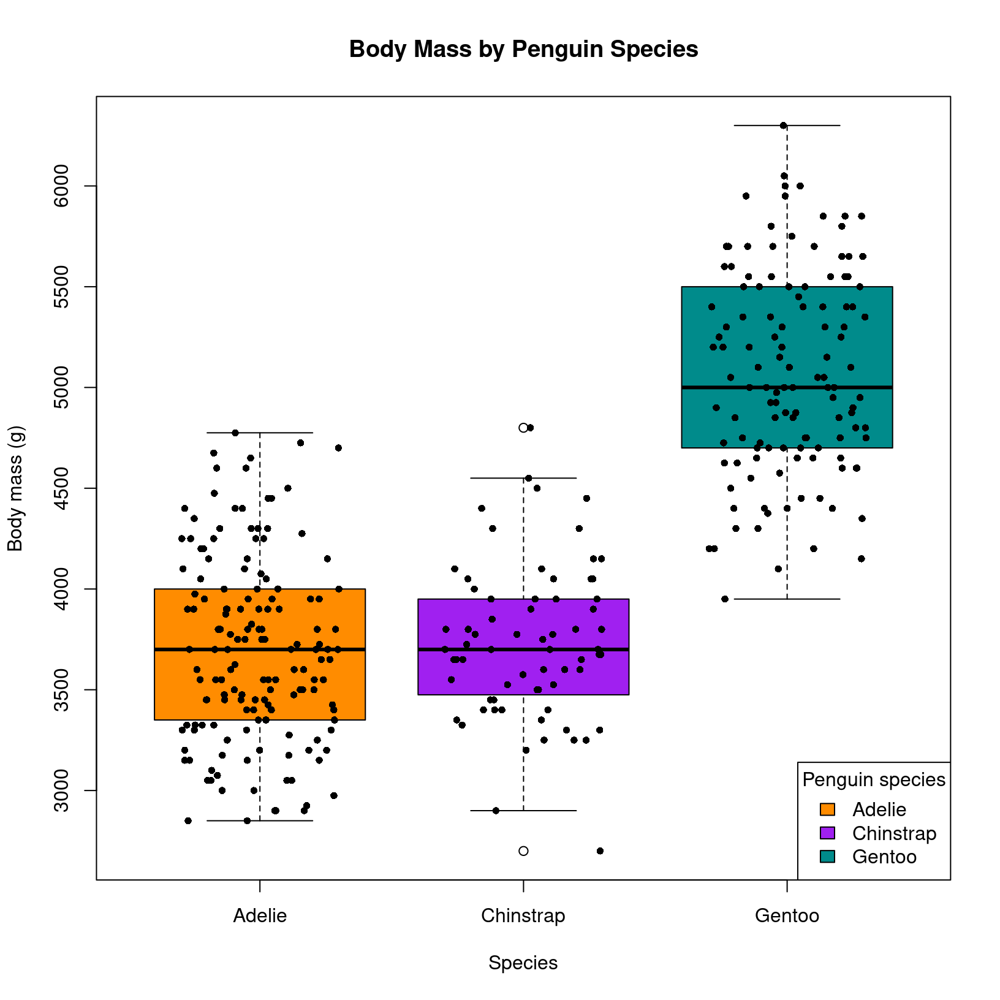
How to recreate this plot–try on your own first!
What if we also want to see individual points in a distribution? We can add points with “jitter” – a small amount of random variation on the x-axis – to better visualize where the points fall.
In ggplot2, you can use the geom_jitter() function to add jittered points to your plot. This adds a small amount of random noise to each point, making it easier to see overlapping points.
# overlay the raw data points using geom_jitter
ggplot(data = penguins, aes(x = species, y = body_mass_g)) +
geom_boxplot(aes(color = species), width = 0.3, show.legend = FALSE) +
geom_jitter(aes(color = species), alpha = 0.5, show.legend = FALSE,
position = position_jitter(width = 0.2)) +
labs(x = "Species",
y = "Body mass (g)")In base R, you can achieve a similar effect using the jitter() function. This function adds a small amount of random variation to the data points, making overlapping points more distinguishable.
# Create the boxplot
boxplot(body_mass_g ~ species, data = penguins,
col = c("darkorange", "purple", "cyan4"),
main = "Body Mass by Penguin Species",
xlab = "Species",
ylab = "Body mass (g)")
# Add overlaid points (jittered). Factor controls the width of the points\
#cex controls their size, and pch controls the symbol
points(jitter(as.numeric(penguins$species), factor = 1.5),
penguins$body_mass_g,
pch = 16, cex = 0.8)
# Add custom legend (optional)
legend("bottomright", legend = levels(penguins$species),
fill = c("darkorange", "purple", "cyan4"),
title = "Penguin species")Example plot: distribution of a numerical variable
If we want to loot at the distribution of one numerical variable in detail, we could use a histogram. Here is an example of histograms that show us the distributions of each species, using new features like partially transparent colors and custom bar widths.
`stat_bin()` using `bins = 30`. Pick better value with `binwidth`.Warning: Removed 2 rows containing non-finite outside the scale range
(`stat_bin()`).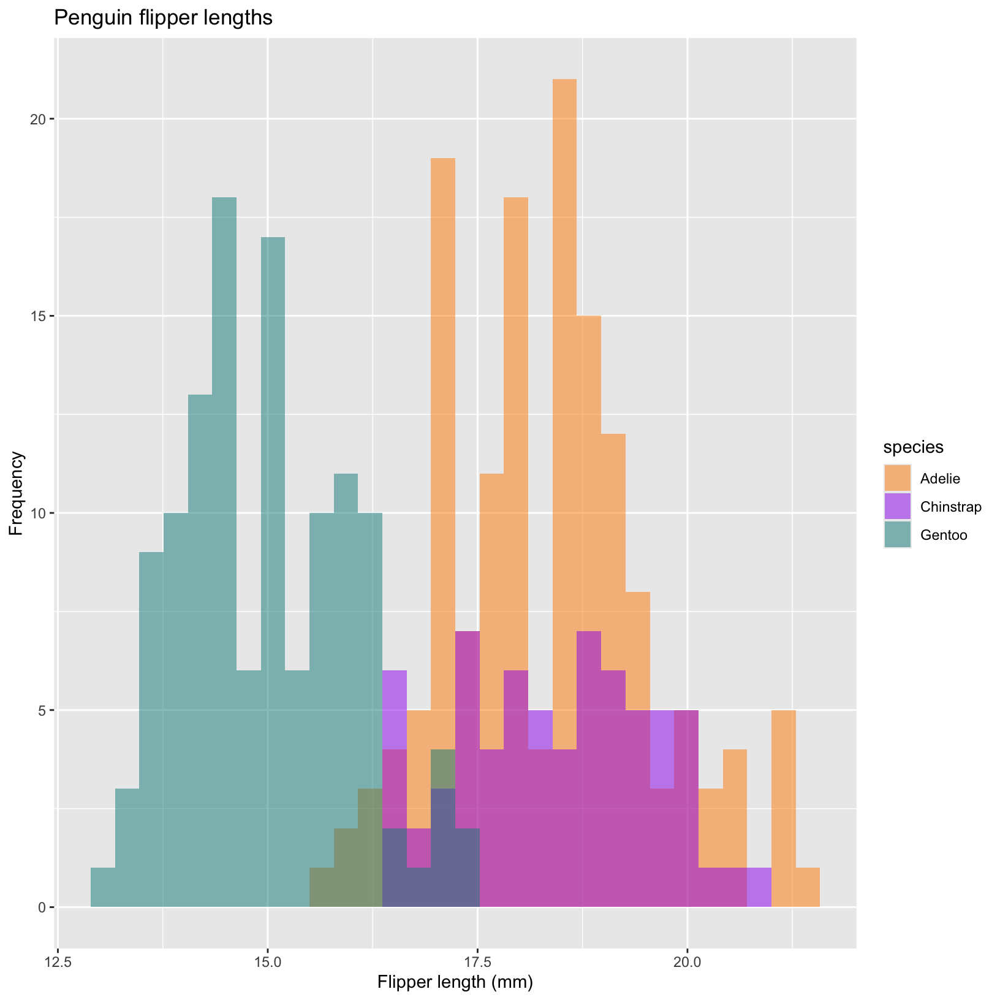
Hint – a reminder of the basic syntax for histograms
# simple histogram of flipper length
hist(penguins$bill_depth_mm, main = "Histogram of Penguin Bill Depth", xlab = "Bill Depth (mm)")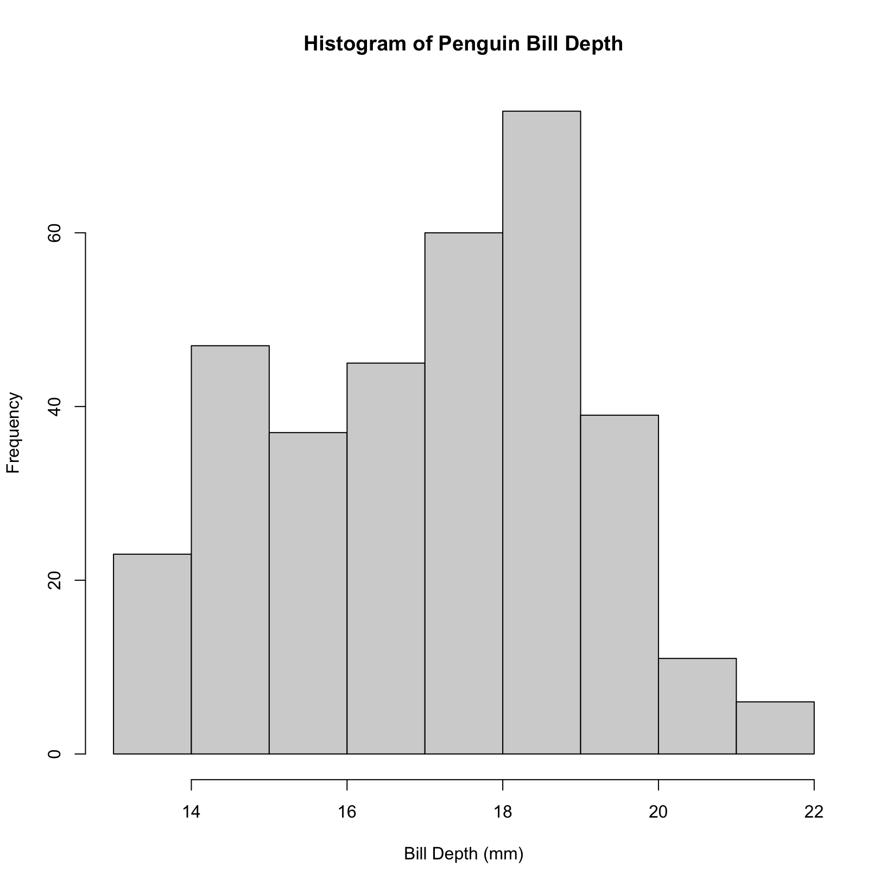
# a simple histogram of flipper length in ggplot
ggplot(data = penguins, aes(x = bill_depth_mm)) +
geom_histogram() `stat_bin()` using `bins = 30`. Pick better value with `binwidth`.Warning: Removed 2 rows containing non-finite outside the scale range
(`stat_bin()`).
How do we change bin widths for histograms?
In base R, you can change the number of bins in a histogram using the breaks argument in the hist() function. This argument allows you to specify the number of bins directly, or you can pass a vector of break points.
#change the number of bins to your liking
hist(penguins$bill_depth_mm, breaks = 30, main = "Histogram of Penguin Bill Depth", xlab = "Bill Depth (mm)")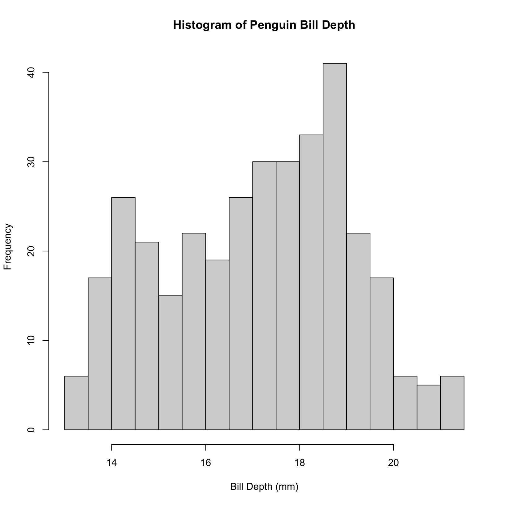
In ggplot2, you can change the number of bins in a histogram using the bins argument within the geom_histogram() function. Alternatively, you can use the binwidth argument to specify the width of each bin.
ggplot(data = penguins, aes(x = body_mass_g)) +
geom_histogram(bins = 30) +
labs(x = "Body Mass (g)", y = "Frequency")Warning: Removed 2 rows containing non-finite outside the scale range
(`stat_bin()`).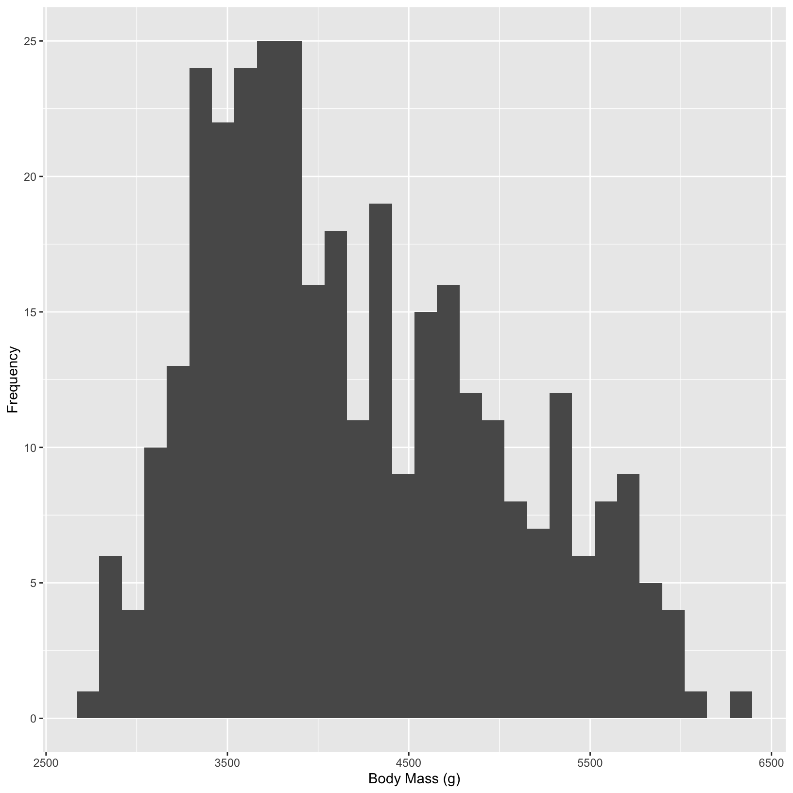
ggplot(data = penguins, aes(x = bill_depth_mm)) +
geom_histogram(binwidth=0.5) Warning: Removed 2 rows containing non-finite outside the scale range
(`stat_bin()`).Challenge: Can we find the means of these distributions, and plot the means on our histograms? Can we add text so the plot viewer can see what the mean is?
Warning: Using `size` aesthetic for lines was deprecated in ggplot2 3.4.0.
ℹ Please use `linewidth` instead.`stat_bin()` using `bins = 30`. Pick better value with `binwidth`.Warning: Removed 2 rows containing non-finite outside the scale range
(`stat_bin()`).
Code for this image
# Calculate the mean bill depth for each species
mean_depth <- penguins %>%
group_by(species) %>%
summarize(mean_bill_depth = mean(bill_depth_mm, na.rm = TRUE))
# add a line representing the mean to the histogram
ggplot(penguins, aes(x = bill_depth_mm, fill = species)) +
geom_histogram(aes(fill = species), alpha = 0.5, position = "identity") +
scale_fill_manual(values = c("darkorange","purple","cyan4")) +
labs(x = "Flipper length (mm)",
y = "Frequency",
title = "Penguin flipper lengths")+
geom_vline(data = mean_depth, aes(xintercept = mean_bill_depth),
color = "red", linetype = "dashed", size = 1) +
geom_text(data = mean_depth, aes(x = mean_bill_depth, y = c(15,10,15),
label = paste(species, "mean:", round(mean_bill_depth, 2))),
color = "black", vjust = -0.5,
hjust = 0.5, size = 4) `stat_bin()` using `bins = 30`. Pick better value with `binwidth`.Warning: Removed 2 rows containing non-finite outside the scale range
(`stat_bin()`).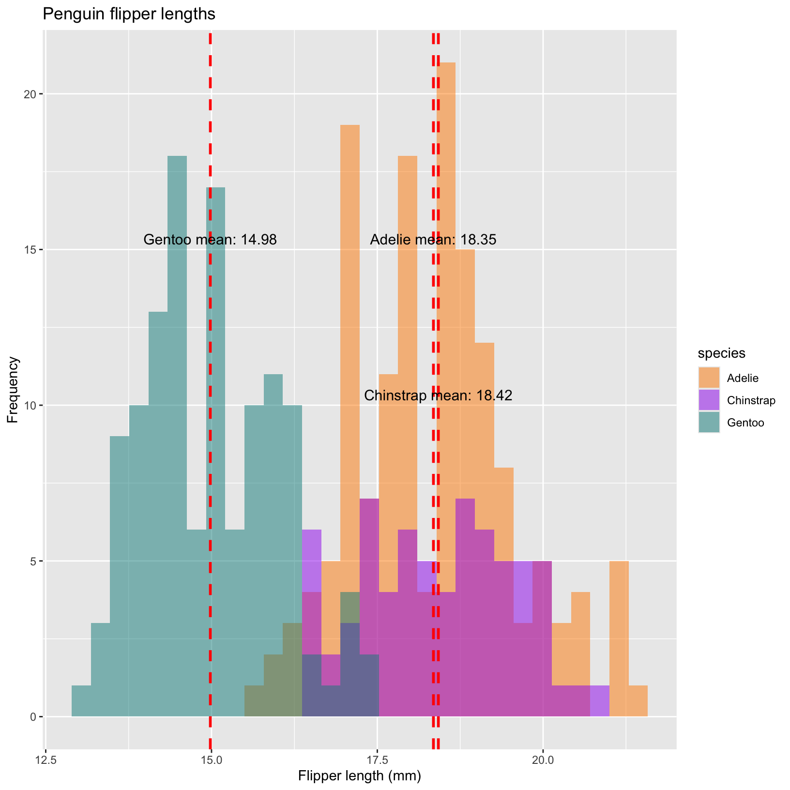
Mini-Lesson: Introduction to facet_grid in ggplot2
Background:
In data visualization, particularly when dealing with complex datasets, it’s beneficial to compare subsets of data across different categories simultaneously. ggplot2 provides various functions for creating faceted plots, with facet_grid being a prominent choice for creating grids that can help in exploring interactions between variables.
Faceting:
Faceting refers to the strategy of splitting one plot into multiple plots based on a factor (or factors) included in the dataset. Each plot represents a level of the factor(s) and shares the same axis scaling and grids, which makes them easy to compare.
The facet_grid function creates a matrix of panels defined by row and column faceting variables. The general syntax is:
facet_grid(rows ~ cols)If we just want to facet by rows or just by columns, replace that spot with a “.”.
#facet by rows
facet_grid(rows ~ .)
#facet by cols
facet_grid(. ~ cols)Lets take some of the plots we made earlier and facet them by the categorical variable year! Note that in some situations it makes more sense to facet by columns, and others by rows.
# Scatter plots with facet_grid
ggplot(data = penguins, aes(x = flipper_length_mm, y = body_mass_g)) +
geom_point(aes(color = species, shape = species), size = 3) +
scale_color_manual(values = c("darkorange","purple","cyan4")) +
labs(title = "Penguin size, Palmer Station LTER",
subtitle = "Flipper length and body mass for Adelie, Chinstrap and Gentoo Penguins",
x = "Flipper length (cm)",
y = "Body mass (kg)",
color = "Penguin species",
shape = "Penguin species") +
theme(legend.position = c(0.9, 0.1), # x and y on a relative scale (0-1)
plot.title.position = "plot",
plot.caption = element_text(hjust = 0, face= "italic"),
plot.caption.position = "plot") +
facet_grid(. ~ year) Warning: Removed 2 rows containing missing values or values outside the scale range
(`geom_point()`).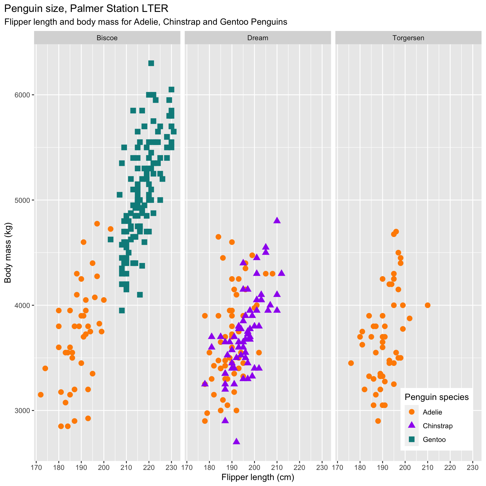
#Boxplots with facet_grid
ggplot(data = penguins, aes(x = species, y = body_mass_g)) +
geom_boxplot(aes(color = species), width = 0.3, show.legend = FALSE) +
geom_jitter(aes(color = species), alpha = 0.5, show.legend = FALSE, position = position_jitter(width = 0.2)) +
labs(x = "Species",
y = "Body mass (g)") +
facet_grid(. ~ year) Warning: Removed 2 rows containing non-finite outside the scale range
(`stat_boxplot()`).
Removed 2 rows containing missing values or values outside the scale range
(`geom_point()`).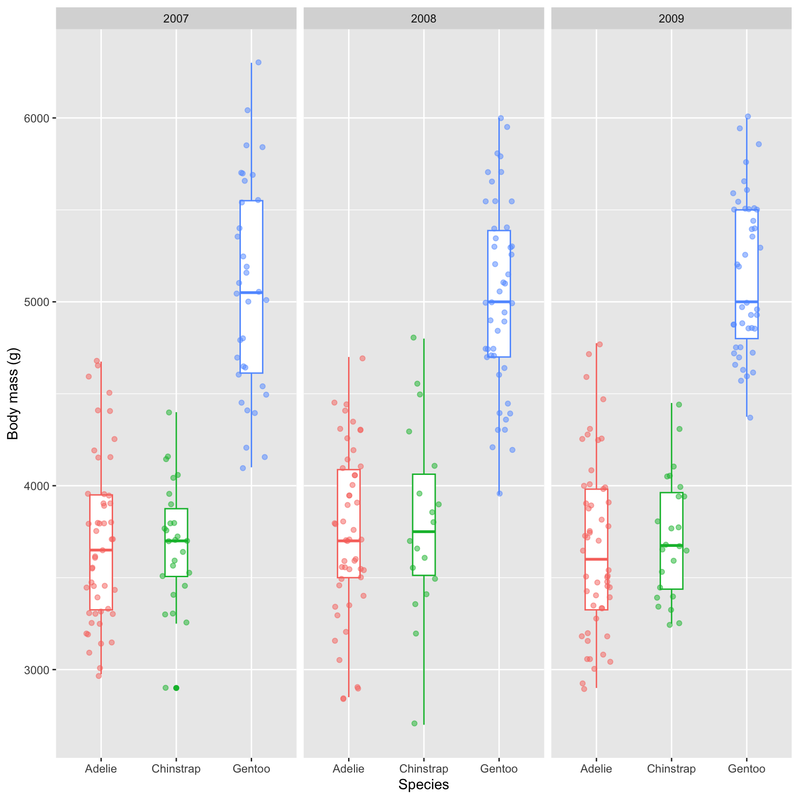
# Histograms with facet_grid for year
ggplot(penguins, aes(x = bill_depth_mm, fill = species)) +
geom_histogram(aes(fill = species),
alpha = 0.5,
position = "identity",
binwidth=0.5) +
scale_fill_manual(values = c("darkorange","purple","cyan4")) +
labs(x = "Flipper length (mm)",
y = "Frequency",
title = "Penguin flipper lengths")+
geom_vline(data = mean_depth, aes(xintercept = mean_bill_depth),
color = "red", linetype = "dashed", size = 1) +
geom_text(data = mean_depth, aes(x = mean_bill_depth, y = c(10,7,5,10,7,5,10,7,5),
label = paste(species, "mean:", round(mean_bill_depth, 2))),
color = "black", vjust = -0.3, hjust = 0.5, size = 4) +
facet_grid(year ~ .) Warning: Removed 2 rows containing non-finite outside the scale range
(`stat_bin()`).